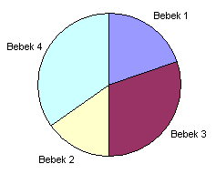

| Nama Program: | pjj0315.PAS / C / CPP |
| Batas Run-time: | 1 detik / test-case |
| Batas Memori: | 16 MB |
| Nama Berkas Masukan: | Standard input (keyboard) |
| Nama Berkas Keluaran: | Standard output (layar) |
Hari ini Pak Dengklek sedang gembira (entah kenapa) sehingga ia membeli sebuah kue berbentuk lingkaran dan hendak membaginya kepada N ekor bebek yang ia miliki. Ia sangat mengetahui seberapa banyak biasanya bebek-bebeknya makan, sehingga ia sudah tahu seberapa besar (dalam persen) setiap ekor bebek harus mendapatkan potongan kue yang ia beli. Pak Dengklek mengetahui jika melakukan potongan penuh (potongan yang tepat melalui titik pusat lingkaran dan membentuk diameter) potongan kue akan makin rapi, sehingga kini ia meminta bantuan Anda untuk menentukan berapa jumlah potongan penuh terbanyak yang dapat ia lakukan dengan proporsi makan bebeknya.
Sebuah baris berisi beberapa bilangan bulat. Bilangan pertama adalah N (1 ≤ N ≤ 8), jumlah bebek yang dimiliki Pak Dengklek, diikuti N bilangan berikutnya berisi persen dari kue yang akan diberikan kepada masing-masing bebek (jumlah semuanya tentu 100).
Sebuah baris berisi sebuah bilangan bulat yang merupakan jumlah potongan penuh terbanyak yang dapat Pak Dengklek lakukan dengan proporsi makan bebeknya.
4 20 15 30 35
1
4 25 25 25 25
2
Berikut penjelasan bagaimana pada contoh kasus 1 Pak Dengklek dapat melakukan 1 potongan penuh. Tidak ada cara lain agar dapat melakukan 2 potongan penuh atau lebih.
